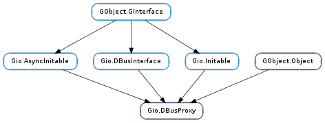

| static | new(connection, flags, info, name, object_path, interface_name, cancellable, callback, *user_data) |
| static | new_finish(res) |
| static | new_for_bus(bus_type, flags, info, name, object_path, interface_name, cancellable, callback, *user_data) |
| static | new_for_bus_finish(res) |
| static | new_for_bus_sync(bus_type, flags, info, name, object_path, interface_name, cancellable) |
| static | new_sync(connection, flags, info, name, object_path, interface_name, cancellable) |
| call(method_name, parameters, flags, timeout_msec, cancellable, callback, *user_data) | |
| call_finish(res) | |
| call_sync(method_name, parameters, flags, timeout_msec, cancellable) | |
| call_with_unix_fd_list(method_name, parameters, flags, timeout_msec, fd_list, cancellable, callback, *user_data) | |
| call_with_unix_fd_list_finish(res) | |
| call_with_unix_fd_list_sync(method_name, parameters, flags, timeout_msec, fd_list, cancellable) | |
| get_cached_property(property_name) | |
| get_cached_property_names() | |
| get_connection() | |
| get_default_timeout() | |
| get_flags() | |
| get_interface_info() | |
| get_interface_name() | |
| get_name() | |
| get_name_owner() | |
| get_object_path() | |
| set_cached_property(property_name, value) | |
| set_default_timeout(timeout_msec) | |
| set_interface_info(info) |
| Name | Type | Flags | Description |
|---|---|---|---|
| g-bus-type | Gio.BusType | w/c | The bus to connect to, if any |
| g-connection | Gio.DBusConnection | r/w/c | The connection the proxy is for |
| g-default-timeout | int | r/w | Timeout for remote method invocation |
| g-flags | Gio.DBusProxyFlags | r/w/c | Flags for the proxy |
| g-interface-info | Gio.DBusInterfaceInfo | r/w | Interface Information |
| g-interface-name | str | r/w/c | The D-Bus interface name the proxy is for |
| g-name | str | r/w/c | The well-known or unique name that the proxy is for |
| g-name-owner | str | r | The unique name for the owner |
| g-object-path | str | r/w/c | The object path the proxy is for |
| Name | Parameters | Return | Description |
|---|---|---|---|
| g-properties-changed | GLib.Variant, list | Emitted when one or more D-Bus properties on proxy changes. The local cache has already been updated when this signal fires. Note that both changed_properties and invalidated_properties are guaranteed to never be None (either may be empty though). If the proxy has the flag Gio.DBusProxyFlags.GET_INVALIDATED_PROPERTIES set, then invalidated_properties will always be empty. This signal corresponds to the PropertiesChanged D-Bus signal on the org.freedesktop.DBus.Properties interface. | |
| g-signal | str, str, GLib.Variant | Emitted when a signal from the remote object and interface that proxy is for, has been received. |
| Name | Type | Access |
|---|---|---|
| parent_instance | GObject.Object | r |
Bases: GObject.Object, Gio.AsyncInitable, Gio.DBusInterface, Gio.Initable
Gio.DBusProxy is a base class used for proxies to access a D-Bus interface on a remote object. A Gio.DBusProxy can be constructed for both well-known and unique names.
By default, Gio.DBusProxy will cache all properties (and listen to changes) of the remote object, and proxy all signals that gets emitted. This behaviour can be changed by passing suitable Gio.DBusProxyFlags when the proxy is created. If the proxy is for a well-known name, the property cache is flushed when the name owner vanishes and reloaded when a name owner appears.
If a Gio.DBusProxy is used for a well-known name, the owner of the name is tracked and can be read from Gio.DBusProxy :g-name-owner. Connect to the GObject.Object ::notify signal to get notified of changes. Additionally, only signals and property changes emitted from the current name owner are considered and calls are always sent to the current name owner. This avoids a number of race conditions when the name is lost by one owner and claimed by another. However, if no name owner currently exists, then calls will be sent to the well-known name which may result in the message bus launching an owner (unless Gio.DBusProxyFlags.DO_NOT_AUTO_START is set).
The generic Gio.DBusProxy ::g-properties-changed and Gio.DBusProxy ::g-signal signals are not very convenient to work with. Therefore, the recommended way of working with proxies is to subclass Gio.DBusProxy, and have more natural properties and signals in your derived class. See for how this can easily be done using the gdbus-codegen tool.
A Gio.DBusProxy instance can be used from multiple threads but note that all signals (e.g. Gio.DBusProxy ::g-signal, Gio.DBusProxy ::g-properties-changed and GObject.Object ::notify ) are emitted in the thread-default main loop of the thread where the instance was constructed.
Gio.DBusProxy for a well-known-name``FIXME: MISSING XINCLUDE CONTENT``
| Parameters: |
|
|---|
Creates a proxy for accessing interface_name on the remote object at object_path owned by name at connection and asynchronously loads D-Bus properties unless the Gio.DBusProxyFlags.DO_NOT_LOAD_PROPERTIES flag is used. Connect to the Gio.DBusProxy ::g-properties-changed signal to get notified about property changes.
If the Gio.DBusProxyFlags.DO_NOT_CONNECT_SIGNALS flag is not set, also sets up match rules for signals. Connect to the Gio.DBusProxy ::g-signal signal to handle signals from the remote object.
If name is a well-known name and the Gio.DBusProxyFlags.DO_NOT_AUTO_START flag isn’t set and no name owner currently exists, the message bus will be requested to launch a name owner for the name.
This is a failable asynchronous constructor - when the proxy is ready, callback will be invoked and you can use Gio.DBusProxy.new_finish () to get the result.
See Gio.DBusProxy.new_sync () and for a synchronous version of this constructor.
See for an example of how Gio.DBusProxy can be used.
| Parameters: | res (Gio.AsyncResult) – A Gio.AsyncResult obtained from the Gio.AsyncReadyCallback function passed to Gio.DBusProxy.new (). |
|---|---|
| Raises: | GLib.GError |
| Returns: | A Gio.DBusProxy or None if error is set. Free with GObject.Object.unref (). |
| Return type: | Gio.DBusProxy |
Finishes creating a Gio.DBusProxy.
| Parameters: |
|
|---|
Like Gio.DBusProxy.new () but takes a Gio.BusType instead of a Gio.DBusConnection.
See for an example of how Gio.DBusProxy can be used.
| Parameters: | res (Gio.AsyncResult) – A Gio.AsyncResult obtained from the Gio.AsyncReadyCallback function passed to Gio.DBusProxy.new_for_bus (). |
|---|---|
| Raises: | GLib.GError |
| Returns: | A Gio.DBusProxy or None if error is set. Free with GObject.Object.unref (). |
| Return type: | Gio.DBusProxy |
Finishes creating a Gio.DBusProxy.
| Parameters: |
|
|---|---|
| Raises: | |
| Returns: | A Gio.DBusProxy or None if error is set. Free with GObject.Object.unref (). |
| Return type: |
Like Gio.DBusProxy.new_sync () but takes a Gio.BusType instead of a Gio.DBusConnection.
See for an example of how Gio.DBusProxy can be used.
| Parameters: |
|
|---|---|
| Raises: | |
| Returns: | A Gio.DBusProxy or None if error is set. Free with GObject.Object.unref (). |
| Return type: |
Creates a proxy for accessing interface_name on the remote object at object_path owned by name at connection and synchronously loads D-Bus properties unless the Gio.DBusProxyFlags.DO_NOT_LOAD_PROPERTIES flag is used.
If the Gio.DBusProxyFlags.DO_NOT_CONNECT_SIGNALS flag is not set, also sets up match rules for signals. Connect to the Gio.DBusProxy ::g-signal signal to handle signals from the remote object.
If name is a well-known name and the Gio.DBusProxyFlags.DO_NOT_AUTO_START flag isn’t set and no name owner currently exists, the message bus will be requested to launch a name owner for the name.
This is a synchronous failable constructor. See Gio.DBusProxy.new () and Gio.DBusProxy.new_finish () for the asynchronous version.
See for an example of how Gio.DBusProxy can be used.
| Parameters: |
|
|---|
Asynchronously invokes the method_name method on proxy.
If method_name contains any dots, then name is split into interface and method name parts. This allows using proxy for invoking methods on other interfaces.
If the Gio.DBusConnection associated with proxy is closed then the operation will fail with Gio.IOErrorEnum.CLOSED. If cancellable is canceled, the operation will fail with Gio.IOErrorEnum.CANCELLED. If parameters contains a value not compatible with the D-Bus protocol, the operation fails with Gio.IOErrorEnum.INVALID_ARGUMENT.
If the parameters GLib.Variant is floating, it is consumed. This allows convenient ‘inline’ use of GLib.Variant.new (), e.g.:
g_dbus_proxy_call (proxy,
"TwoStrings",
g_variant_new ("(ss)",
"Thing One",
"Thing Two"),
G_DBUS_CALL_FLAGS_NONE,
-1,
NULL,
(GAsyncReadyCallback) two_strings_done,
&data);
If proxy has an expected interface (see Gio.DBusProxy :g-interface-info ) and method_name is referenced by it, then the return value is checked against the return type.
This is an asynchronous method. When the operation is finished, callback will be invoked in the thread-default main loop of the thread you are calling this method from. You can then call Gio.DBusProxy.call_finish () to get the result of the operation. See Gio.DBusProxy.call_sync () for the synchronous version of this method.
If callback is None then the D-Bus method call message will be sent with the Gio.DBusMessageFlags.NO_REPLY_EXPECTED flag set.
| Parameters: | res (Gio.AsyncResult) – A Gio.AsyncResult obtained from the Gio.AsyncReadyCallback passed to Gio.DBusProxy.call (). |
|---|---|
| Raises: | GLib.GError |
| Returns: | None if error is set. Otherwise a GLib.Variant tuple with return values. Free with GLib.Variant.unref (). |
| Return type: | GLib.Variant |
Finishes an operation started with Gio.DBusProxy.call ().
| Parameters: |
|
|---|---|
| Raises: | |
| Returns: | None if error is set. Otherwise a GLib.Variant tuple with return values. Free with GLib.Variant.unref (). |
| Return type: |
Synchronously invokes the method_name method on proxy.
If method_name contains any dots, then name is split into interface and method name parts. This allows using proxy for invoking methods on other interfaces.
If the Gio.DBusConnection associated with proxy is disconnected then the operation will fail with Gio.IOErrorEnum.CLOSED. If cancellable is canceled, the operation will fail with Gio.IOErrorEnum.CANCELLED. If parameters contains a value not compatible with the D-Bus protocol, the operation fails with Gio.IOErrorEnum.INVALID_ARGUMENT.
If the parameters GLib.Variant is floating, it is consumed. This allows convenient ‘inline’ use of GLib.Variant.new (), e.g.:
g_dbus_proxy_call_sync (proxy,
"TwoStrings",
g_variant_new ("(ss)",
"Thing One",
"Thing Two"),
G_DBUS_CALL_FLAGS_NONE,
-1,
NULL,
&error);
The calling thread is blocked until a reply is received. See Gio.DBusProxy.call () for the asynchronous version of this method.
If proxy has an expected interface (see Gio.DBusProxy :g-interface-info ) and method_name is referenced by it, then the return value is checked against the return type.
| Parameters: |
|
|---|
Like Gio.DBusProxy.call () but also takes a Gio.UnixFDList object.
This method is only available on UNIX.
| Parameters: | res (Gio.AsyncResult) – A Gio.AsyncResult obtained from the Gio.AsyncReadyCallback passed to Gio.DBusProxy.call_with_unix_fd_list (). |
|---|---|
| Raises: | GLib.GError |
| Returns: | None if error is set. Otherwise a GLib.Variant tuple with return values. Free with GLib.Variant.unref (). |
| Return type: | GLib.Variant, out_fd_list: Gio.UnixFDList |
Finishes an operation started with Gio.DBusProxy.call_with_unix_fd_list ().
| Parameters: |
|
|---|---|
| Raises: | |
| Returns: | None if error is set. Otherwise a GLib.Variant tuple with return values. Free with GLib.Variant.unref (). |
| Return type: | GLib.Variant, out_fd_list: Gio.UnixFDList |
Like Gio.DBusProxy.call_sync () but also takes and returns Gio.UnixFDList objects.
This method is only available on UNIX.
| Parameters: | property_name (str) – Property name. |
|---|---|
| Returns: | A reference to the GLib.Variant instance that holds the value for property_name or None if the value is not in the cache. The returned reference must be freed with GLib.Variant.unref (). |
| Return type: | GLib.Variant |
Looks up the value for a property from the cache. This call does no blocking IO.
If proxy has an expected interface (see Gio.DBusProxy :g-interface-info ) and property_name is referenced by it, then value is checked against the type of the property.
| Returns: | A None-terminated array of strings or None if proxy has no cached properties. Free the returned array with GLib.strfreev (). |
|---|---|
| Return type: | [str] |
Gets the names of all cached properties on proxy.
| Returns: | A Gio.DBusConnection owned by proxy. Do not free. |
|---|---|
| Return type: | Gio.DBusConnection |
Gets the connection proxy is for.
| Returns: | Timeout to use for proxy. |
|---|---|
| Return type: | int |
Gets the timeout to use if -1 (specifying default timeout) is passed as timeout_msec in the Gio.DBusProxy.call () and Gio.DBusProxy.call_sync () functions.
See the Gio.DBusProxy :g-default-timeout property for more details.
| Returns: | Flags from the Gio.DBusProxyFlags enumeration. |
|---|---|
| Return type: | Gio.DBusProxyFlags |
Gets the flags that proxy was constructed with.
| Returns: | A Gio.DBusInterfaceInfo or None. Do not unref the returned object, it is owned by proxy. |
|---|---|
| Return type: | Gio.DBusInterfaceInfo |
Returns the Gio.DBusInterfaceInfo, if any, specifying the interface that proxy conforms to. See the Gio.DBusProxy :g-interface-info property for more details.
| Returns: | A string owned by proxy. Do not free. |
|---|---|
| Return type: | str |
Gets the D-Bus interface name proxy is for.
| Returns: | A string owned by proxy. Do not free. |
|---|---|
| Return type: | str |
Gets the name that proxy was constructed for.
| Returns: | The name owner or None if no name owner exists. Free with GLib.free (). |
|---|---|
| Return type: | str |
The unique name that owns the name that proxy is for or None if no-one currently owns that name. You may connect to the GObject.Object ::notify signal to track changes to the Gio.DBusProxy :g-name-owner property.
| Returns: | A string owned by proxy. Do not free. |
|---|---|
| Return type: | str |
Gets the object path proxy is for.
| Parameters: |
|
|---|
If value is not None, sets the cached value for the property with name property_name to the value in value.
If value is None, then the cached value is removed from the property cache.
If proxy has an expected interface (see Gio.DBusProxy :g-interface-info ) and property_name is referenced by it, then value is checked against the type of the property.
If the value GLib.Variant is floating, it is consumed. This allows convenient ‘inline’ use of GLib.Variant.new (), e.g.
g_dbus_proxy_set_cached_property (proxy,
"SomeProperty",
g_variant_new ("(si)",
"A String",
42));
Normally you will not need to use this method since proxy is tracking changes using the org.freedesktop.DBus.Properties.PropertiesChanged D-Bus signal. However, for performance reasons an object may decide to not use this signal for some properties and instead use a proprietary out-of-band mechanism to transmit changes.
As a concrete example, consider an object with a property ChatroomParticipants which is an array of strings. Instead of transmitting the same (long) array every time the property changes, it is more efficient to only transmit the delta using e.g. signals ChatroomParticipantJoined(String name) and ChatroomParticipantParted(String name).
| Parameters: | timeout_msec (int) – Timeout in milliseconds. |
|---|
Sets the timeout to use if -1 (specifying default timeout) is passed as timeout_msec in the Gio.DBusProxy.call () and Gio.DBusProxy.call_sync () functions.
See the Gio.DBusProxy :g-default-timeout property for more details.
| Parameters: | info (Gio.DBusInterfaceInfo or None) – Minimum interface this proxy conforms to or None to unset. |
|---|
Ensure that interactions with proxy conform to the given interface. See the Gio.DBusProxy :g-interface-info property for more details.